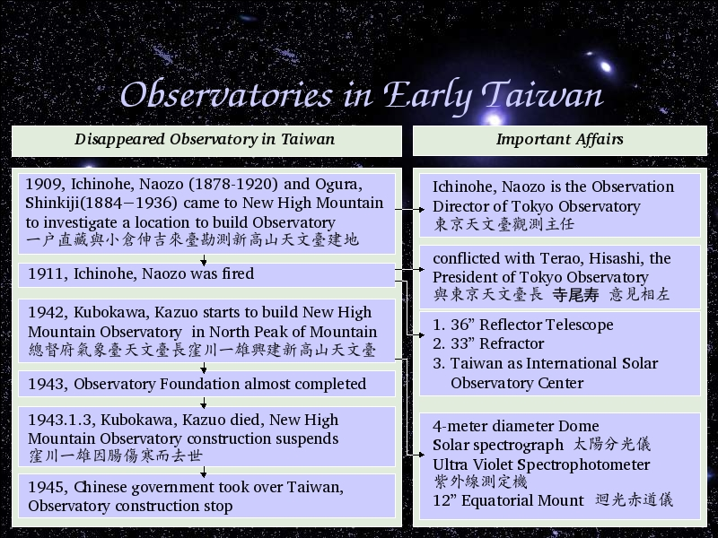

Voice Over:
Now I am going to talk about a sad story about a disappeared observatory, New High Mountain Observatory.
1909, the director of Tokyo Observatory, Ichinohe, Naozo and his colleague, Ogura, Shinkiji came to Taiwan.
They wanted to find a location in high mountain to built astronomical observatory.
New High Mountain, now we call it Jade Mountain, is the best choice.
Why they called Jade Mountain as New High Mountain?
This is simple, because Jade Mountain is higher than Fuji Mountain, the highest mountain in Japan.
But the President of Tokyo Observatory, Terao, Hisashi didn't agree. So 1911, Ichinohe Naozo was fired.
After he was fired, he still tried to find supports to built observatory, he has 3 main plans to built observatory in New High Mountain.
1. 36 inch Reflector Telescope
2. 33 inch Refractor
3. Set up Taiwan as International Solar Observatory Center
But unfortunately, the construction fee is too high, even now, 80 years later, we all know NCU spend 10 years to built Lulin Observatory in Lulin Mountian, belong to Jade Mountain.
There were no railroad at that time, traffic were not convenient, no power, no water, and the president of Tokyo Observatory doesn't agree, so it was very difficult to built observatory in New High Mountain.
31 Years later, 1943, Kubokawa, Kazuo, the president of astronomical observatory of Meteorological Observatory decided to built New High Mountain Observatory.
His design is to built a 4 meter diameter dome, set up Solar Spectrograph, UV spectrophotometer, and 12 inch Equatorial mount.
1943, the observatory foundation almost completed, but unfortunately, he got sick and died in January 3th.
The construction of observatory suspends.
1945, Chinese government took over Taiwan, and nobody continues Kubokawa, Kazuo's job, so Observatory construction stop.